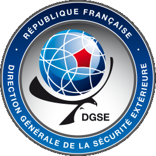
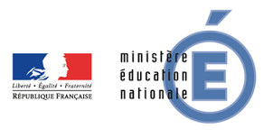
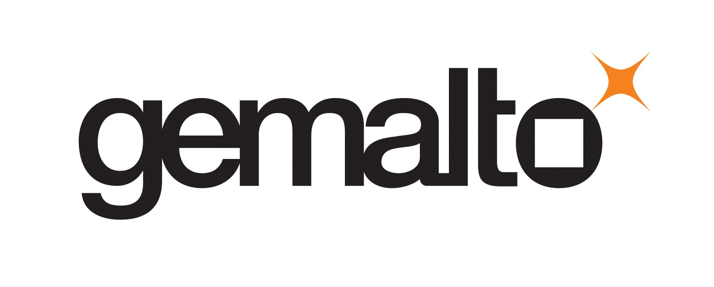

Alkindi, c’est quoi ?
Le concours Alkindi est une compétition de cryptographie ouverte aux classes de 4e, 3e et 2nde. Il est organisé par les associations Animath et France-ioi. La participation est entièrement gratuite.
Déroulement
Le concours 2018-2019 comporte trois tours et une finale. Les meilleur·e·s participant·e·s de chaque tour se qualifient pour le tour suivant :
- Du 10 au 22 décembre : le premier tour est une épreuve de 45 minutes sur ordinateur, à laquelle on peut participer seul·e ou en binôme, sous la surveillance d'un·e enseignant·e. Il s’agit d’une série de problèmes interactifs pour découvrir divers aspects de la cryptanalyse. L'épreuve de l'année dernière peut être testée sur epreuve.concours-alkindi.fr.
- Du 4 février au 16 mars : le deuxième tour est une épreuve en ligne ouverte pendant 6 semaines, à laquelle on participe par équipes de 1 à 4 personnes, en classe ou chez soi. Plusieurs défis sont proposés, qui consistent en des messages secrets à décrypter.
- Du 21 mars au 6 avril (13 avril pour la Guadeloupe) : le troisième tour est une épreuve constituée des mêmes sujets que le 2e tour, mais à résoudre avec de nouvelles données et en une heure et demie, sous la surveillance d'un·e enseignant·e. Seule cette épreuve compte pour la sélection en finale.
- 15 ou 22 mai (date à confirmer) : la finale se déroulera à Paris et consistera en une épreuve de deux heures sur papier.
Vous êtes enseignant·e et souhaitez inscrire vos classes ?
L'organisation est très simple. Vous pouvez à tout moment devenir coordinateur/coordinatrice sur coordinateur.concours-alkindi.fr. Vous pouvez inscrire vos élèves jusqu'à la fin du premier tour.
Vous êtes élève en 4e, 3e ou 2nde ?
L'inscription doit passer par un·e enseignant·e de votre établissement. Parlez du concours à vos enseignant·e·s et transmettez-leur l'adresse concours-alkindi.fr.
Objectifs
La sécurité des données numériques et de leur transmission est un des enjeux majeurs de notre société, que ce soit pour sécuriser les transactions bancaires ou garantir la protection de la vie privée. L'objectif du concours est de montrer aux élèves que les mathématiques et l’informatique permettent de comprendre les outils utilisés dans ce domaine.
Nous souhaitons faire découvrir aux élèves cette application très concrète des mathématiques, qui joue un rôle fondamental dans leur vie quotidienne. Nous voulons les faire réfléchir, de façon ludique, aux fondements mathématiques, informatiques et logiques de la cryptanalyse. Enfin, nous souhaitons les sensibiliser à la question importante de la sécurité de l’information.
Ce concours rentre dans le cadre de la Stratégie mathématiques et du plan École numérique du Ministère de l’Éducation nationale.
Qui peut participer ?
Tou·te·s les élèves scolarisé·e·s en 4e, 3e ou 2nde dans un établissement français.
Les élèves d'autres classes peuvent faire les épreuves des deux premiers tours.
Je n'ai jamais fait de crypto. C'est grave ?
Pas du tout. Au contraire, c’est le principe ! Ce concours s’adresse à des personnes qui n’ont jamais fait de cryptanalyse. Lors des épreuves en temps limité, toutes les informations nécessaires seront contenues dans le sujet.
Est ce que c'est difficile ?
Le concours est accessible à tou·te·s les élèves de quatrième, troisième et seconde. Lors de la première épreuve, ouverte à tou·te·s, chaque question comporte trois versions de difficulté croissante. Ainsi, chaque participant·e peut s’amuser à résoudre des défis adaptés à son niveau et découvrir les principes de base de la cryptographie. Pour le deuxième tour, il s'agit aussi surtout de faire preuve de persévérance et de bien travailler en équipe.
Mais il faut quand même être bon en maths ?
Pas nécessairement, certains problèmes font appel à certaines notions de fin de collège, mais les mathématiques ne sont pas la principale difficulté.
Alors qu’est-ce qu’il faut savoir ?
Il n’y a pas de prérequis autres que le programme de collège. Venez avec l’esprit ouvert, faites preuve de logique et suivez les consignes. Et surtout amusez vous !
Qu'est ce qu’on gagne ?
- une invitation à visiter un laboratoire de cryptographie ;
- un exemplaire de la revue Découverte du n° 408 (jan-fév 2017) « Les révolutions cryptologiques de 1937 à nos jours ».
La première équipe se verra offrir un ordinateur portable par personne.
Les deuxièmes gagneront des tablettes tactiles, les troisièmes des smartphones.
Les autres équipes finalistes gagneront un exemplaire du magazine Tangente(n°180, février 2018) "Mathématiques et espionnage" ainsi qu'un exemplaire du livre Bibliothèque Tangente n°26 "Cryptographie et codes secrets".
Les membres des 20 meilleures équipes nationales ainsi que de la meilleure équipe de chaque académie gagneront :
Les équipes finalistes seront conviées à une cérémonie officielle de remise des prix à Paris.
Parrainage & Patronage
L'édition 2017-2018 du Concours Alkindi est placée sous le patronage du Secrétaire d'État auprès du Premier Ministre, chargé du Numérique, M. Mounir Mahjoubi.
Gérard Berry est le parrain du concours Alkindi. Il est professeur au Collège de France, où il tient la chaire Algorithmes, machines et langages depuis 2012, après y avoir tenu deux chaires annuelles en 2007-2008 et 2009-2010. Il est également membre de l'Académie des sciences depuis 2002, de l'Académie des technologies depuis 2005, et lauréat de la médaille d'or du CNRS en 2014. Chercheur à l'École des Mines et à l'Inria depuis 1972 il s'intéresse à la logique mathématique et développe à partir de 1982 le langage de programmation Esterel, qui permet de programmer et de certifier le comportement de systèmes complexes (par exemple programmes qui pilotent les avions). Entre 2001 et 2009, il est directeur scientifique d'Esterel Technologies, entreprise créée par des chercheurs, avant de rejoinde l'Inria comme directeur de recherche et président de sa Commission d'évaluation. Il participe activement à la promotion de l'informatique.
Sponsors et partenaires
  
En apprendre plus sur les organisateurs, sponsors et partenaires du concours Alkindi.
L'affiche
Pour faire connaître le concours dans votre établissement, n'hésitez pas à imprimer et diffuser notre affiche :
Versions en pdf à imprimer :
L'affiche contient 4 énigmes à déchiffrer !
Vous pouvez également relire la bande dessinée associée au concours.
Vidéos
-
{{video.title}}
Qui était Al Kindi ?
Al Kindi est un savant arabe du IXe siècle qui s'est intéressé à de nombreuses sciences, allant de la géométrie à la médecine et à la chimie. Dans le « Manuscrit sur le chiffrement des messages cryptographiques », il explique comment casser les meilleurs codes connus à son époque, à l'aide de la technique de l'analyse de fréquence. C'est la première trace connue de cryptanalyse. Par conséquent, il est considéré comme l'un des fondateurs de la discipline.